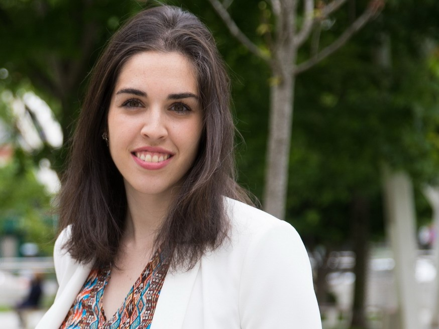

Eva López Sainz-Aja
Desarrolladora web
Perfil
Tras más de nueve años dedicada a la gestión de proyectos de traducción e interpretación, así como a la administración dentro las empresas en las que he trabajado, decidí arrancar mi formación en un sector desconocimdo para mi como es el del desarrollo web, la programación y la gestión de bases de datos. Pretendo que mi carrera profesional combine las dos ramas a las que me dedico actualmente: los idiomas y la programación.
Habilidades profesionales
- Java, Phyton, C++
- HTML, CSS...
- UML, GitHub, etc.
Idiomas
- Inglés (C1)
- Alemán (B2)
- Italiano (B1)
Contacto
- +34 663 26 12 11
Experiencia Laboral
Gestion de proyectos de traducción e interpretación
- Gestión de proyectos
- Gestión de clientes y proveedores
- Tareas administrativas (pedidos, calidad, facturación, etc.)
Gestion de proyectos de traducción e interpretación
- Gestión de proyectos
- Traducción de textos técnicos, comerciales, legales, etc.
- Gestión de clientes y proveedores
- Tareas administrativas y comerciales
Internet Ads Assessor - Content consulting
- Análisis de contenidos publicitarios para Google Ads
- Validación, revisión y transcripciones de textos para desarrollos de Inteligencia Artificial
Traductora en prácticas
- Traducción de textos para la página web y comunicaciones oficiales de la organización.
Formación
- Grado en Traducción e Interpretación. Universidad de Valladolid (2011-2015)
- Máster en Traducción Institucional. Universidad de Salamanca (2015-2016)
- Ciclo Superior en Desarrollo de aplicaciones multiplataforma. UNIRFP (2024-actualidad)